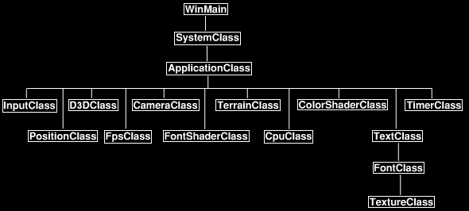
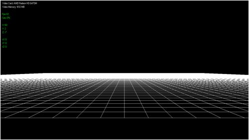

Tutorial 1: Grid and Camera Movement

This tutorial will cover the basics of rendering a terrain grid using DirectX 11. Before getting into more advanced terrain concepts you should be able to render a basic grid and have good camera functionality and that will be the purpose of this tutorial. With a good camera that can move around the terrain easily it can help debugging issues that occur during development. Having good debugging tools is always the key to speeding up development and ensuring quality. Also note that this tutorial is based on the knowledge and framework of the DirectX 11 tutorials.
The grid in this tutorial will be a basic 100x100 unit flat terrain. It will be composed of quads made out of lines that will be encapsulated in a new class called TerrainClass. The camera will also be based on a new class called PositionClass (CameraClass is still used to make the view matrix, I've just separated the functionality). PositionClass will maintain the position and rotation of the camera as well as the acceleration and deceleration so that the camera moves smoothly around the terrain. And finally we will reuse the TextClass to display the FPS, CPU usage, video card information, and position/rotation of the camera.
Framework
The frame work contains the new TerrainClass and PositionClass. The rest of the classes have already been covered in the DirectX 11 tutorials section.

We will start the tutorial by looking at the new TerrainClass.
Terrainclass.h
The terrain class will encapsulate the model data and rendering functionality for drawing the 100x100 line grid. This class contains only the basics for now since this tutorial is just focused on getting a very basic terrain drawn first.
////////////////////////////////////////////////////////////////////////////////
// Filename: terrainclass.h
////////////////////////////////////////////////////////////////////////////////
#ifndef _TERRAINCLASS_H_
#define _TERRAINCLASS_H_
//////////////
// INCLUDES //
//////////////
#include <d3d11.h>
#include <d3dx10math.h>
////////////////////////////////////////////////////////////////////////////////
// Class name: TerrainClass
////////////////////////////////////////////////////////////////////////////////
class TerrainClass
{
private:
The vertex data/structure for the terrain will just be position and color as we are only drawing white lines to start with.
struct VertexType
{
D3DXVECTOR3 position;
D3DXVECTOR4 color;
};
public:
TerrainClass();
TerrainClass(const TerrainClass&);
~TerrainClass();
The TerrainClass has the usual public and private functions for loading, releasing, and rendering the terrain.
bool Initialize(ID3D11Device*); void Shutdown(); void Render(ID3D11DeviceContext*); int GetIndexCount(); private: bool InitializeBuffers(ID3D11Device*); void ShutdownBuffers(); void RenderBuffers(ID3D11DeviceContext*); private: int m_terrainWidth, m_terrainHeight; int m_vertexCount, m_indexCount; ID3D11Buffer *m_vertexBuffer, *m_indexBuffer; }; #endif
Terrainclass.cpp
//////////////////////////////////////////////////////////////////////////////// // Filename: terrainclass.cpp //////////////////////////////////////////////////////////////////////////////// #include "terrainclass.h"
The class constructor will initialize the vertex and index buffer pointers to null.
TerrainClass::TerrainClass()
{
m_vertexBuffer = 0;
m_indexBuffer = 0;
}
TerrainClass::TerrainClass(const TerrainClass& other)
{
}
TerrainClass::~TerrainClass()
{
}
The Initialize function will first set the width and height of the terrain and then call the function for initializing the vertex and index buffers that will hold the terrain model data.
bool TerrainClass::Initialize(ID3D11Device* device)
{
bool result;
// Manually set the width and height of the terrain.
m_terrainWidth = 100;
m_terrainHeight = 100;
// Initialize the vertex and index buffer that hold the geometry for the terrain.
result = InitializeBuffers(device);
if(!result)
{
return false;
}
return true;
}
Shutdown calls the ShutdownBuffers function to release the vertex and index buffers that are holding the terrain model data.
void TerrainClass::Shutdown()
{
// Release the vertex and index buffer.
ShutdownBuffers();
return;
}
The Render function calls RenderBuffers to put the terrain model data on the graphics pipeline so the ColorShaderClass object can then render it. This is done in the ApplicationClass::Render function.
void TerrainClass::Render(ID3D11DeviceContext* deviceContext)
{
// Put the vertex and index buffers on the graphics pipeline to prepare them for drawing.
RenderBuffers(deviceContext);
return;
}
GetIndexCount returns the number of indexes in the terrain model. This is called by the shaders that render the terrain as they require this information to perform the render.
int TerrainClass::GetIndexCount()
{
return m_indexCount;
}
The InitializeBuffers function creates the vertex and index buffers used to hold the terrain grid data. The terrain is going to be composed of lines forming squares. In DirectX 11 to draw a line you need two points, and to draw a square you need eight points to form the four lines. So in the code below you will see a for loop that creates each square in the 100x100 grid using eight points to create four lines. Its not efficient but it is fine just to quickly see something working. Since we aren't loading a model I use a vertex and index array to create the terrain grid and then I create a vertex and index buffer from those arrays.
bool TerrainClass::InitializeBuffers(ID3D11Device* device)
{
VertexType* vertices;
unsigned long* indices;
int index, i, j;
float positionX, positionZ;
D3D11_BUFFER_DESC vertexBufferDesc, indexBufferDesc;
D3D11_SUBRESOURCE_DATA vertexData, indexData;
HRESULT result;
Determine the number of vertices in the 100x100 mesh.
// Calculate the number of vertices in the terrain mesh. m_vertexCount = (m_terrainWidth - 1) * (m_terrainHeight - 1) * 8; // Set the index count to the same as the vertex count. m_indexCount = m_vertexCount;
Create the temporary vertex and index arrays.
// Create the vertex array.
vertices = new VertexType[m_vertexCount];
if(!vertices)
{
return false;
}
// Create the index array.
indices = new unsigned long[m_indexCount];
if(!indices)
{
return false;
}
Now load the vertex and index arrays with the line lists that will form the 100x100 terrain grid.
// Initialize the index to the vertex array.
index = 0;
// Load the vertex and index arrays with the terrain data.
for(j=0; j<(m_terrainHeight-1); j++)
{
for(i=0; i<(m_terrainWidth-1); i++)
{
// LINE 1
// Upper left.
positionX = (float)i;
positionZ = (float)(j+1);
vertices[index].position = D3DXVECTOR3(positionX, 0.0f, positionZ);
vertices[index].color = D3DXVECTOR4(1.0f, 1.0f, 1.0f, 1.0f);
indices[index] = index;
index++;
// Upper right.
positionX = (float)(i+1);
positionZ = (float)(j+1);
vertices[index].position = D3DXVECTOR3(positionX, 0.0f, positionZ);
vertices[index].color = D3DXVECTOR4(1.0f, 1.0f, 1.0f, 1.0f);
indices[index] = index;
index++;
// LINE 2
// Upper right.
positionX = (float)(i+1);
positionZ = (float)(j+1);
vertices[index].position = D3DXVECTOR3(positionX, 0.0f, positionZ);
vertices[index].color = D3DXVECTOR4(1.0f, 1.0f, 1.0f, 1.0f);
indices[index] = index;
index++;
// Bottom right.
positionX = (float)(i+1);
positionZ = (float)j;
vertices[index].position = D3DXVECTOR3(positionX, 0.0f, positionZ);
vertices[index].color = D3DXVECTOR4(1.0f, 1.0f, 1.0f, 1.0f);
indices[index] = index;
index++;
// LINE 3
// Bottom right.
positionX = (float)(i+1);
positionZ = (float)j;
vertices[index].position = D3DXVECTOR3(positionX, 0.0f, positionZ);
vertices[index].color = D3DXVECTOR4(1.0f, 1.0f, 1.0f, 1.0f);
indices[index] = index;
index++;
// Bottom left.
positionX = (float)i;
positionZ = (float)j;
vertices[index].position = D3DXVECTOR3(positionX, 0.0f, positionZ);
vertices[index].color = D3DXVECTOR4(1.0f, 1.0f, 1.0f, 1.0f);
indices[index] = index;
index++;
// LINE 4
// Bottom left.
positionX = (float)i;
positionZ = (float)j;
vertices[index].position = D3DXVECTOR3(positionX, 0.0f, positionZ);
vertices[index].color = D3DXVECTOR4(1.0f, 1.0f, 1.0f, 1.0f);
indices[index] = index;
index++;
// Upper left.
positionX = (float)i;
positionZ = (float)(j+1);
vertices[index].position = D3DXVECTOR3(positionX, 0.0f, positionZ);
vertices[index].color = D3DXVECTOR4(1.0f, 1.0f, 1.0f, 1.0f);
indices[index] = index;
index++;
}
}
Create the vertex and index buffers from the vertex and index arrays.
// Set up the description of the static vertex buffer.
vertexBufferDesc.Usage = D3D11_USAGE_DEFAULT;
vertexBufferDesc.ByteWidth = sizeof(VertexType) * m_vertexCount;
vertexBufferDesc.BindFlags = D3D11_BIND_VERTEX_BUFFER;
vertexBufferDesc.CPUAccessFlags = 0;
vertexBufferDesc.MiscFlags = 0;
vertexBufferDesc.StructureByteStride = 0;
// Give the subresource structure a pointer to the vertex data.
vertexData.pSysMem = vertices;
vertexData.SysMemPitch = 0;
vertexData.SysMemSlicePitch = 0;
// Now create the vertex buffer.
result = device->CreateBuffer(&vertexBufferDesc, &vertexData, &m_vertexBuffer);
if(FAILED(result))
{
return false;
}
// Set up the description of the static index buffer.
indexBufferDesc.Usage = D3D11_USAGE_DEFAULT;
indexBufferDesc.ByteWidth = sizeof(unsigned long) * m_indexCount;
indexBufferDesc.BindFlags = D3D11_BIND_INDEX_BUFFER;
indexBufferDesc.CPUAccessFlags = 0;
indexBufferDesc.MiscFlags = 0;
indexBufferDesc.StructureByteStride = 0;
// Give the subresource structure a pointer to the index data.
indexData.pSysMem = indices;
indexData.SysMemPitch = 0;
indexData.SysMemSlicePitch = 0;
// Create the index buffer.
result = device->CreateBuffer(&indexBufferDesc, &indexData, &m_indexBuffer);
if(FAILED(result))
{
return false;
}
Finally release the arrays since the data is now in the buffers.
// Release the arrays now that the buffers have been created and loaded. delete [] vertices; vertices = 0; delete [] indices; indices = 0; return true; }
The ShutdownBuffers function releases the vertex and index buffer that were used to hold the terrain data.
void TerrainClass::ShutdownBuffers()
{
// Release the index buffer.
if(m_indexBuffer)
{
m_indexBuffer->Release();
m_indexBuffer = 0;
}
// Release the vertex buffer.
if(m_vertexBuffer)
{
m_vertexBuffer->Release();
m_vertexBuffer = 0;
}
return;
}
RenderBuffers places the line list terrain model on the graphics pipeline for rendering.
void TerrainClass::RenderBuffers(ID3D11DeviceContext* deviceContext)
{
unsigned int stride;
unsigned int offset;
// Set vertex buffer stride and offset.
stride = sizeof(VertexType);
offset = 0;
// Set the vertex buffer to active in the input assembler so it can be rendered.
deviceContext->IASetVertexBuffers(0, 1, &m_vertexBuffer, &stride, &offset);
// Set the index buffer to active in the input assembler so it can be rendered.
deviceContext->IASetIndexBuffer(m_indexBuffer, DXGI_FORMAT_R32_UINT, 0);
Set the render format to line list.
// Set the type of primitive that should be rendered from this vertex buffer, in this case a line list. deviceContext->IASetPrimitiveTopology(D3D11_PRIMITIVE_TOPOLOGY_LINELIST); return; }
Positionclass.h
The PositionClass is the class that encapsulates the camera/viewer location and the camera movement functionality.
////////////////////////////////////////////////////////////////////////////////
// Filename: positionclass.h
////////////////////////////////////////////////////////////////////////////////
#ifndef _POSITIONCLASS_H_
#define _POSITIONCLASS_H_
//////////////
// INCLUDES //
//////////////
#include <math.h>
////////////////////////////////////////////////////////////////////////////////
// Class name: PositionClass
////////////////////////////////////////////////////////////////////////////////
class PositionClass
{
public:
PositionClass();
PositionClass(const PositionClass&);
~PositionClass();
The PositionClass has some helper functions to set and retrieve the position and rotation of the viewer/camera.
void SetPosition(float, float, float); void SetRotation(float, float, float); void GetPosition(float&, float&, float&); void GetRotation(float&, float&, float&);
SetFrameTime is used to keep the viewer/camera in sync with the speed of the application.
void SetFrameTime(float);
The movement functions are called to move the viewer/camera based on the user input.
void MoveForward(bool); void MoveBackward(bool); void MoveUpward(bool); void MoveDownward(bool); void TurnLeft(bool); void TurnRight(bool); void LookUpward(bool); void LookDownward(bool); private: float m_positionX, m_positionY, m_positionZ; float m_rotationX, m_rotationY, m_rotationZ; float m_frameTime; float m_forwardSpeed, m_backwardSpeed; float m_upwardSpeed, m_downwardSpeed; float m_leftTurnSpeed, m_rightTurnSpeed; float m_lookUpSpeed, m_lookDownSpeed; }; #endif
Positionclass.cpp
//////////////////////////////////////////////////////////////////////////////// // Filename: positionclass.cpp //////////////////////////////////////////////////////////////////////////////// #include "positionclass.h"
The class constructor initializes all the position, rotation, frame time, and speed variables to zero.
PositionClass::PositionClass()
{
m_positionX = 0.0f;
m_positionY = 0.0f;
m_positionZ = 0.0f;
m_rotationX = 0.0f;
m_rotationY = 0.0f;
m_rotationZ = 0.0f;
m_frameTime = 0.0f;
m_forwardSpeed = 0.0f;
m_backwardSpeed = 0.0f;
m_upwardSpeed = 0.0f;
m_downwardSpeed = 0.0f;
m_leftTurnSpeed = 0.0f;
m_rightTurnSpeed = 0.0f;
m_lookUpSpeed = 0.0f;
m_lookDownSpeed = 0.0f;
}
PositionClass::PositionClass(const PositionClass& other)
{
}
PositionClass::~PositionClass()
{
}
The SetPosition and SetRotation functions are used for setting the position and rotation of the viewer/camera. These functions are generally used to initialize the position of the camera other than at the origin. In this tutorial the camera will be set slightly back from the grid and in the center of it.
void PositionClass::SetPosition(float x, float y, float z)
{
m_positionX = x;
m_positionY = y;
m_positionZ = z;
return;
}
void PositionClass::SetRotation(float x, float y, float z)
{
m_rotationX = x;
m_rotationY = y;
m_rotationZ = z;
return;
}
The GetPosition and GetRotation functions return the current position and rotation of the camera location. In this tutorial these functions are called to provide the location and rotation of the camera for display purposes. We will draw the position/rotation as text strings on the left side of the screen. This is very useful for debugging.
void PositionClass::GetPosition(float& x, float& y, float& z)
{
x = m_positionX;
y = m_positionY;
z = m_positionZ;
return;
}
void PositionClass::GetRotation(float& x, float& y, float& z)
{
x = m_rotationX;
y = m_rotationY;
z = m_rotationZ;
return;
}
The SetFrameTime function needs to be called each frame. It stores the current frame time inside a private member variable and is then used by the movement calculation functions. This way regardless of the speed that the application is running at the movement and rotation speed remains the same. If this wasn't done then the movement rate would speed up or down with the frame rate.
void PositionClass::SetFrameTime(float time)
{
m_frameTime = time;
return;
}
The following eight movement functions all work nearly the same. All eight functions are called each frame. The keydown input variable to each function indicates if the user is pressing the forward key, the backward key, and so forth. If they are pressing the key then each frame the speed will accelerate until it hits a maximum. This way the camera speeds up similar to the acceleration in a vehicle creating the effect of smooth movement and high responsiveness. Likewise if the user releases the key and the keydown variable is false it will then smoothly slow down each frame until the speed hits zero. The speed is calculated against the frame time to ensure the movement speed remains the same regardless of the frame rate. Each function then uses some basic math to calculate the new position of the viewer/camera.
This function calculates the forward speed and movement of the viewer/camera.
void PositionClass::MoveForward(bool keydown)
{
float radians;
// Update the forward speed movement based on the frame time and whether the user is holding the key down or not.
if(keydown)
{
m_forwardSpeed += m_frameTime * 0.001f;
if(m_forwardSpeed > (m_frameTime * 0.03f))
{
m_forwardSpeed = m_frameTime * 0.03f;
}
}
else
{
m_forwardSpeed -= m_frameTime * 0.0007f;
if(m_forwardSpeed < 0.0f)
{
m_forwardSpeed = 0.0f;
}
}
// Convert degrees to radians.
radians = m_rotationY * 0.0174532925f;
// Update the position.
m_positionX += sinf(radians) * m_forwardSpeed;
m_positionZ += cosf(radians) * m_forwardSpeed;
return;
}
This function calculates the backward speed and movement of the viewer/camera.
void PositionClass::MoveBackward(bool keydown)
{
float radians;
// Update the backward speed movement based on the frame time and whether the user is holding the key down or not.
if(keydown)
{
m_backwardSpeed += m_frameTime * 0.001f;
if(m_backwardSpeed > (m_frameTime * 0.03f))
{
m_backwardSpeed = m_frameTime * 0.03f;
}
}
else
{
m_backwardSpeed -= m_frameTime * 0.0007f;
if(m_backwardSpeed < 0.0f)
{
m_backwardSpeed = 0.0f;
}
}
// Convert degrees to radians.
radians = m_rotationY * 0.0174532925f;
// Update the position.
m_positionX -= sinf(radians) * m_backwardSpeed;
m_positionZ -= cosf(radians) * m_backwardSpeed;
return;
}
This function calculates the upward speed and movement of the viewer/camera.
void PositionClass::MoveUpward(bool keydown)
{
// Update the upward speed movement based on the frame time and whether the user is holding the key down or not.
if(keydown)
{
m_upwardSpeed += m_frameTime * 0.003f;
if(m_upwardSpeed > (m_frameTime * 0.03f))
{
m_upwardSpeed = m_frameTime * 0.03f;
}
}
else
{
m_upwardSpeed -= m_frameTime * 0.002f;
if(m_upwardSpeed < 0.0f)
{
m_upwardSpeed = 0.0f;
}
}
// Update the height position.
m_positionY += m_upwardSpeed;
return;
}
This function calculates the downward speed and movement of the viewer/camera.
void PositionClass::MoveDownward(bool keydown)
{
// Update the downward speed movement based on the frame time and whether the user is holding the key down or not.
if(keydown)
{
m_downwardSpeed += m_frameTime * 0.003f;
if(m_downwardSpeed > (m_frameTime * 0.03f))
{
m_downwardSpeed = m_frameTime * 0.03f;
}
}
else
{
m_downwardSpeed -= m_frameTime * 0.002f;
if(m_downwardSpeed < 0.0f)
{
m_downwardSpeed = 0.0f;
}
}
// Update the height position.
m_positionY -= m_downwardSpeed;
return;
}
This function calculates the left turn speed and rotation of the viewer/camera.
void PositionClass::TurnLeft(bool keydown)
{
// Update the left turn speed movement based on the frame time and whether the user is holding the key down or not.
if(keydown)
{
m_leftTurnSpeed += m_frameTime * 0.01f;
if(m_leftTurnSpeed > (m_frameTime * 0.15f))
{
m_leftTurnSpeed = m_frameTime * 0.15f;
}
}
else
{
m_leftTurnSpeed -= m_frameTime* 0.005f;
if(m_leftTurnSpeed < 0.0f)
{
m_leftTurnSpeed = 0.0f;
}
}
// Update the rotation.
m_rotationY -= m_leftTurnSpeed;
// Keep the rotation in the 0 to 360 range.
if(m_rotationY < 0.0f)
{
m_rotationY += 360.0f;
}
return;
}
This function calculates the right turn speed and rotation of the viewer/camera.
void PositionClass::TurnRight(bool keydown)
{
// Update the right turn speed movement based on the frame time and whether the user is holding the key down or not.
if(keydown)
{
m_rightTurnSpeed += m_frameTime * 0.01f;
if(m_rightTurnSpeed > (m_frameTime * 0.15f))
{
m_rightTurnSpeed = m_frameTime * 0.15f;
}
}
else
{
m_rightTurnSpeed -= m_frameTime* 0.005f;
if(m_rightTurnSpeed < 0.0f)
{
m_rightTurnSpeed = 0.0f;
}
}
// Update the rotation.
m_rotationY += m_rightTurnSpeed;
// Keep the rotation in the 0 to 360 range.
if(m_rotationY > 360.0f)
{
m_rotationY -= 360.0f;
}
return;
}
This function calculates the upward turn speed and rotation of the viewer/camera.
void PositionClass::LookUpward(bool keydown)
{
// Update the upward rotation speed movement based on the frame time and whether the user is holding the key down or not.
if(keydown)
{
m_lookUpSpeed += m_frameTime * 0.01f;
if(m_lookUpSpeed > (m_frameTime * 0.15f))
{
m_lookUpSpeed = m_frameTime * 0.15f;
}
}
else
{
m_lookUpSpeed -= m_frameTime* 0.005f;
if(m_lookUpSpeed < 0.0f)
{
m_lookUpSpeed = 0.0f;
}
}
// Update the rotation.
m_rotationX -= m_lookUpSpeed;
// Keep the rotation maximum 90 degrees.
if(m_rotationX > 90.0f)
{
m_rotationX = 90.0f;
}
return;
}
This function calculates the downward turn speed and rotation of the viewer/camera.
void PositionClass::LookDownward(bool keydown)
{
// Update the downward rotation speed movement based on the frame time and whether the user is holding the key down or not.
if(keydown)
{
m_lookDownSpeed += m_frameTime * 0.01f;
if(m_lookDownSpeed > (m_frameTime * 0.15f))
{
m_lookDownSpeed = m_frameTime * 0.15f;
}
}
else
{
m_lookDownSpeed -= m_frameTime* 0.005f;
if(m_lookDownSpeed < 0.0f)
{
m_lookDownSpeed = 0.0f;
}
}
// Update the rotation.
m_rotationX += m_lookDownSpeed;
// Keep the rotation maximum 90 degrees.
if(m_rotationX < -90.0f)
{
m_rotationX = -90.0f;
}
return;
}
Systemclass.h
The SystemClass has been slightly modified from the DirectX tutorials version. It now only contains the Windows initialization and the new ApplicationClass.
//////////////////////////////////////////////////////////////////////////////// // Filename: systemclass.h //////////////////////////////////////////////////////////////////////////////// #ifndef _SYSTEMCLASS_H_ #define _SYSTEMCLASS_H_ /////////////////////////////// // PRE-PROCESSING DIRECTIVES // /////////////////////////////// #define WIN32_LEAN_AND_MEAN ////////////// // INCLUDES // ////////////// #include <windows.h>
We include the header for the new ApplicationClass here.
///////////////////////
// MY CLASS INCLUDES //
///////////////////////
#include "applicationclass.h"
////////////////////////////////////////////////////////////////////////////////
// Class name: SystemClass
////////////////////////////////////////////////////////////////////////////////
class SystemClass
{
public:
SystemClass();
SystemClass(const SystemClass&);
~SystemClass();
bool Initialize();
void Shutdown();
void Run();
LRESULT CALLBACK MessageHandler(HWND, UINT, WPARAM, LPARAM);
private:
bool Frame();
void InitializeWindows(int&, int&);
void ShutdownWindows();
private:
LPCWSTR m_applicationName;
HINSTANCE m_hinstance;
HWND m_hwnd;
We also include a private pointer to the new ApplicationClass object.
ApplicationClass* m_Application; }; ///////////////////////// // FUNCTION PROTOTYPES // ///////////////////////// static LRESULT CALLBACK WndProc(HWND, UINT, WPARAM, LPARAM); ///////////// // GLOBALS // ///////////// static SystemClass* ApplicationHandle = 0; #endif
Systemclass.cpp
//////////////////////////////////////////////////////////////////////////////// // Filename: systemclass.cpp //////////////////////////////////////////////////////////////////////////////// #include "systemclass.h"
The new ApplicationClass object pointer is initialized to null in the class constructor.
SystemClass::SystemClass()
{
m_Application = 0;
}
SystemClass::SystemClass(const SystemClass& other)
{
}
SystemClass::~SystemClass()
{
}
bool SystemClass::Initialize()
{
int screenWidth, screenHeight;
bool result;
// Initialize the width and height of the screen to zero before sending the variables into the function.
screenWidth = 0;
screenHeight = 0;
// Initialize the windows api.
InitializeWindows(screenWidth, screenHeight);
The ApplicationClass object is created and initialized here.
// Create the application wrapper object.
m_Application = new ApplicationClass;
if(!m_Application)
{
return false;
}
// Initialize the application wrapper object.
result = m_Application->Initialize(m_hinstance, m_hwnd, screenWidth, screenHeight);
if(!result)
{
return false;
}
return true;
}
void SystemClass::Shutdown()
{
The new ApplicationClass object is released in the Shutdown function.
// Release the application wrapper object.
if(m_Application)
{
m_Application->Shutdown();
delete m_Application;
m_Application = 0;
}
// Shutdown the window.
ShutdownWindows();
return;
}
void SystemClass::Run()
{
MSG msg;
bool done, result;
// Initialize the message structure.
ZeroMemory(&msg, sizeof(MSG));
// Loop until there is a quit message from the window or the user.
done = false;
while(!done)
{
// Handle the windows messages.
if(PeekMessage(&msg, NULL, 0, 0, PM_REMOVE))
{
TranslateMessage(&msg);
DispatchMessage(&msg);
}
// If windows signals to end the application then exit out.
if(msg.message == WM_QUIT)
{
done = true;
}
else
{
// Otherwise do the frame processing.
result = Frame();
if(!result)
{
done = true;
}
}
}
return;
}
bool SystemClass::Frame()
{
bool result;
The frame processing now calls the ApplicationClass so that all application processing can be encapsulated inside it. This helps simplify the purpose of the SystemClass.
// Do the frame processing for the application object.
result = m_Application->Frame();
if(!result)
{
return false;
}
return true;
}
LRESULT CALLBACK SystemClass::MessageHandler(HWND hwnd, UINT umsg, WPARAM wparam, LPARAM lparam)
{
return DefWindowProc(hwnd, umsg, wparam, lparam);
}
void SystemClass::InitializeWindows(int& screenWidth, int& screenHeight)
{
WNDCLASSEX wc;
DEVMODE dmScreenSettings;
int posX, posY;
// Get an external pointer to this object.
ApplicationHandle = this;
// Get the instance of this application.
m_hinstance = GetModuleHandle(NULL);
// Give the application a name.
m_applicationName = L"Engine";
// Setup the windows class with default settings.
wc.style = CS_HREDRAW | CS_VREDRAW | CS_OWNDC;
wc.lpfnWndProc = WndProc;
wc.cbClsExtra = 0;
wc.cbWndExtra = 0;
wc.hInstance = m_hinstance;
wc.hIcon = LoadIcon(NULL, IDI_WINLOGO);
wc.hIconSm = wc.hIcon;
wc.hCursor = LoadCursor(NULL, IDC_ARROW);
wc.hbrBackground = (HBRUSH)GetStockObject(BLACK_BRUSH);
wc.lpszMenuName = NULL;
wc.lpszClassName = m_applicationName;
wc.cbSize = sizeof(WNDCLASSEX);
// Register the window class.
RegisterClassEx(&wc);
// Determine the resolution of the clients desktop screen.
screenWidth = GetSystemMetrics(SM_CXSCREEN);
screenHeight = GetSystemMetrics(SM_CYSCREEN);
// Setup the screen settings depending on whether it is running in full screen or in windowed mode.
if(FULL_SCREEN)
{
// If full screen set the screen to maximum size of the users desktop and 32bit.
memset(&dmScreenSettings, 0, sizeof(dmScreenSettings));
dmScreenSettings.dmSize = sizeof(dmScreenSettings);
dmScreenSettings.dmPelsWidth = (unsigned long)screenWidth;
dmScreenSettings.dmPelsHeight = (unsigned long)screenHeight;
dmScreenSettings.dmBitsPerPel = 32;
dmScreenSettings.dmFields = DM_BITSPERPEL | DM_PELSWIDTH | DM_PELSHEIGHT;
// Change the display settings to full screen.
ChangeDisplaySettings(&dmScreenSettings, CDS_FULLSCREEN);
// Set the position of the window to the top left corner.
posX = posY = 0;
}
else
{
// If windowed then set it to 800x600 resolution.
screenWidth = 800;
screenHeight = 600;
// Place the window in the middle of the screen.
posX = (GetSystemMetrics(SM_CXSCREEN) - screenWidth) / 2;
posY = (GetSystemMetrics(SM_CYSCREEN) - screenHeight) / 2;
}
// Create the window with the screen settings and get the handle to it.
m_hwnd = CreateWindowEx(WS_EX_APPWINDOW, m_applicationName, m_applicationName,
WS_CLIPSIBLINGS | WS_CLIPCHILDREN | WS_POPUP,
posX, posY, screenWidth, screenHeight, NULL, NULL, m_hinstance, NULL);
// Bring the window up on the screen and set it as main focus.
ShowWindow(m_hwnd, SW_SHOW);
SetForegroundWindow(m_hwnd);
SetFocus(m_hwnd);
// Hide the mouse cursor.
ShowCursor(false);
return;
}
void SystemClass::ShutdownWindows()
{
// Show the mouse cursor.
ShowCursor(true);
// Fix the display settings if leaving full screen mode.
if(FULL_SCREEN)
{
ChangeDisplaySettings(NULL, 0);
}
// Remove the window.
DestroyWindow(m_hwnd);
m_hwnd = NULL;
// Remove the application instance.
UnregisterClass(m_applicationName, m_hinstance);
m_hinstance = NULL;
// Release the pointer to this class.
ApplicationHandle = NULL;
return;
}
LRESULT CALLBACK WndProc(HWND hwnd, UINT umessage, WPARAM wparam, LPARAM lparam)
{
switch(umessage)
{
// Check if the window is being destroyed.
case WM_DESTROY:
{
PostQuitMessage(0);
return 0;
}
// Check if the window is being closed.
case WM_CLOSE:
{
PostQuitMessage(0);
return 0;
}
// All other messages pass to the message handler in the system class.
default:
{
return ApplicationHandle->MessageHandler(hwnd, umessage, wparam, lparam);
}
}
}
Applicationclass.h
The ApplicationClass is the main wrapper class for the entire terrain application. It handles all the graphics, input, and processing.
////////////////////////////////////////////////////////////////////////////////
// Filename: applicationclass.h
////////////////////////////////////////////////////////////////////////////////
#ifndef _APPLICATIONCLASS_H_
#define _APPLICATIONCLASS_H_
/////////////
// GLOBALS //
/////////////
const bool FULL_SCREEN = true;
const bool VSYNC_ENABLED = true;
const float SCREEN_DEPTH = 1000.0f;
const float SCREEN_NEAR = 0.1f;
///////////////////////
// MY CLASS INCLUDES //
///////////////////////
#include "inputclass.h"
#include "d3dclass.h"
#include "cameraclass.h"
#include "terrainclass.h"
#include "colorshaderclass.h"
#include "timerclass.h"
#include "positionclass.h"
#include "fpsclass.h"
#include "cpuclass.h"
#include "fontshaderclass.h"
#include "textclass.h"
////////////////////////////////////////////////////////////////////////////////
// Class name: ApplicationClass
////////////////////////////////////////////////////////////////////////////////
class ApplicationClass
{
public:
ApplicationClass();
ApplicationClass(const ApplicationClass&);
~ApplicationClass();
bool Initialize(HINSTANCE, HWND, int, int);
void Shutdown();
bool Frame();
private:
bool HandleInput(float);
bool RenderGraphics();
private:
InputClass* m_Input;
D3DClass* m_Direct3D;
CameraClass* m_Camera;
TerrainClass* m_Terrain;
ColorShaderClass* m_ColorShader;
TimerClass* m_Timer;
PositionClass* m_Position;
FpsClass* m_Fps;
CpuClass* m_Cpu;
FontShaderClass* m_FontShader;
TextClass* m_Text;
};
#endif
Applicationclass.cpp
//////////////////////////////////////////////////////////////////////////////// // Filename: applicationclass.cpp //////////////////////////////////////////////////////////////////////////////// #include "applicationclass.h"
The class constructor initializes all the object pointers to null.
ApplicationClass::ApplicationClass()
{
m_Input = 0;
m_Direct3D = 0;
m_Camera = 0;
m_Terrain = 0;
m_ColorShader = 0;
m_Timer = 0;
m_Position = 0;
m_Fps = 0;
m_Cpu = 0;
m_FontShader = 0;
m_Text = 0;
}
ApplicationClass::ApplicationClass(const ApplicationClass& other)
{
}
ApplicationClass::~ApplicationClass()
{
}
bool ApplicationClass::Initialize(HINSTANCE hinstance, HWND hwnd, int screenWidth, int screenHeight)
{
bool result;
float cameraX, cameraY, cameraZ;
D3DXMATRIX baseViewMatrix;
char videoCard[128];
int videoMemory;
Create and initialize the input object.
// Create the input object. The input object will be used to handle reading the keyboard and mouse input from the user.
m_Input = new InputClass;
if(!m_Input)
{
return false;
}
// Initialize the input object.
result = m_Input->Initialize(hinstance, hwnd, screenWidth, screenHeight);
if(!result)
{
MessageBox(hwnd, L"Could not initialize the input object.", L"Error", MB_OK);
return false;
}
Create and initialize the DirectX 11 object.
// Create the Direct3D object.
m_Direct3D = new D3DClass;
if(!m_Direct3D)
{
return false;
}
// Initialize the Direct3D object.
result = m_Direct3D->Initialize(screenWidth, screenHeight, VSYNC_ENABLED, hwnd, FULL_SCREEN, SCREEN_DEPTH, SCREEN_NEAR);
if(!result)
{
MessageBox(hwnd, L"Could not initialize DirectX 11.", L"Error", MB_OK);
return false;
}
Create and initialize the camera object.
// Create the camera object.
m_Camera = new CameraClass;
if(!m_Camera)
{
return false;
}
// Initialize a base view matrix with the camera for 2D user interface rendering.
m_Camera->SetPosition(0.0f, 0.0f, -1.0f);
m_Camera->Render();
m_Camera->GetViewMatrix(baseViewMatrix);
// Set the initial position of the camera.
cameraX = 50.0f;
cameraY = 2.0f;
cameraZ = -7.0f;
m_Camera->SetPosition(cameraX, cameraY, cameraZ);
Create and initialize the terrain object.
// Create the terrain object.
m_Terrain = new TerrainClass;
if(!m_Terrain)
{
return false;
}
// Initialize the terrain object.
result = m_Terrain->Initialize(m_Direct3D->GetDevice());
if(!result)
{
MessageBox(hwnd, L"Could not initialize the terrain object.", L"Error", MB_OK);
return false;
}
Create and initialize the color shader object.
// Create the color shader object.
m_ColorShader = new ColorShaderClass;
if(!m_ColorShader)
{
return false;
}
// Initialize the color shader object.
result = m_ColorShader->Initialize(m_Direct3D->GetDevice(), hwnd);
if(!result)
{
MessageBox(hwnd, L"Could not initialize the color shader object.", L"Error", MB_OK);
return false;
}
Create and initialize the timer object.
// Create the timer object.
m_Timer = new TimerClass;
if(!m_Timer)
{
return false;
}
// Initialize the timer object.
result = m_Timer->Initialize();
if(!result)
{
MessageBox(hwnd, L"Could not initialize the timer object.", L"Error", MB_OK);
return false;
}
Create and initialize the position object.
// Create the position object.
m_Position = new PositionClass;
if(!m_Position)
{
return false;
}
// Set the initial position of the viewer to the same as the initial camera position.
m_Position->SetPosition(cameraX, cameraY, cameraZ);
Create and initialize the FPS object.
// Create the fps object.
m_Fps = new FpsClass;
if(!m_Fps)
{
return false;
}
// Initialize the fps object.
m_Fps->Initialize();
Create and initialize the CPU usage object.
// Create the cpu object.
m_Cpu = new CpuClass;
if(!m_Cpu)
{
return false;
}
// Initialize the cpu object.
m_Cpu->Initialize();
Create and initialize the font shader object.
// Create the font shader object.
m_FontShader = new FontShaderClass;
if(!m_FontShader)
{
return false;
}
// Initialize the font shader object.
result = m_FontShader->Initialize(m_Direct3D->GetDevice(), hwnd);
if(!result)
{
MessageBox(hwnd, L"Could not initialize the font shader object.", L"Error", MB_OK);
return false;
}
Create and initialize the text object.
// Create the text object.
m_Text = new TextClass;
if(!m_Text)
{
return false;
}
// Initialize the text object.
result = m_Text->Initialize(m_Direct3D->GetDevice(), m_Direct3D->GetDeviceContext(), hwnd, screenWidth, screenHeight, baseViewMatrix);
if(!result)
{
MessageBox(hwnd, L"Could not initialize the text object.", L"Error", MB_OK);
return false;
}
// Retrieve the video card information.
m_Direct3D->GetVideoCardInfo(videoCard, videoMemory);
// Set the video card information in the text object.
result = m_Text->SetVideoCardInfo(videoCard, videoMemory, m_Direct3D->GetDeviceContext());
if(!result)
{
MessageBox(hwnd, L"Could not set video card info in the text object.", L"Error", MB_OK);
return false;
}
return true;
}
The Shutdown function will release all the objects that were created in the Initialize function.
void ApplicationClass::Shutdown()
{
// Release the text object.
if(m_Text)
{
m_Text->Shutdown();
delete m_Text;
m_Text = 0;
}
// Release the font shader object.
if(m_FontShader)
{
m_FontShader->Shutdown();
delete m_FontShader;
m_FontShader = 0;
}
// Release the cpu object.
if(m_Cpu)
{
m_Cpu->Shutdown();
delete m_Cpu;
m_Cpu = 0;
}
// Release the fps object.
if(m_Fps)
{
delete m_Fps;
m_Fps = 0;
}
// Release the position object.
if(m_Position)
{
delete m_Position;
m_Position = 0;
}
// Release the timer object.
if(m_Timer)
{
delete m_Timer;
m_Timer = 0;
}
// Release the color shader object.
if(m_ColorShader)
{
m_ColorShader->Shutdown();
delete m_ColorShader;
m_ColorShader = 0;
}
// Release the terrain object.
if(m_Terrain)
{
m_Terrain->Shutdown();
delete m_Terrain;
m_Terrain = 0;
}
// Release the camera object.
if(m_Camera)
{
delete m_Camera;
m_Camera = 0;
}
// Release the Direct3D object.
if(m_Direct3D)
{
m_Direct3D->Shutdown();
delete m_Direct3D;
m_Direct3D = 0;
}
// Release the input object.
if(m_Input)
{
m_Input->Shutdown();
delete m_Input;
m_Input = 0;
}
return;
}
The Frame function does all the processing for the terrain application. All processing, input, and graphics must be handled here.
bool ApplicationClass::Frame()
{
bool result;
// Read the user input.
result = m_Input->Frame();
if(!result)
{
return false;
}
// Check if the user pressed escape and wants to exit the application.
if(m_Input->IsEscapePressed() == true)
{
return false;
}
// Update the system stats.
m_Timer->Frame();
m_Fps->Frame();
m_Cpu->Frame();
// Update the FPS value in the text object.
result = m_Text->SetFps(m_Fps->GetFps(), m_Direct3D->GetDeviceContext());
if(!result)
{
return false;
}
// Update the CPU usage value in the text object.
result = m_Text->SetCpu(m_Cpu->GetCpuPercentage(), m_Direct3D->GetDeviceContext());
if(!result)
{
return false;
}
// Do the frame input processing.
result = HandleInput(m_Timer->GetTime());
if(!result)
{
return false;
}
// Render the graphics.
result = RenderGraphics();
if(!result)
{
return false;
}
return result;
}
The HandleInput function does all the processing related to the user input from the keyboard and mouse.
bool ApplicationClass::HandleInput(float frameTime)
{
bool keyDown, result;
float posX, posY, posZ, rotX, rotY, rotZ;
The very first thing that is done is the frame time is set in the PositionClass object. The reason being is that the frame time is required by all the following movement calculation functions. If it is not set then the movement will not be accurate.
// Set the frame time for calculating the updated position. m_Position->SetFrameTime(frameTime);
Next the user input is determined for each of the eight movement types. The forward, backward, turn left, and turn right functions are updated by the arrow keys. The up and down movement functions are updated by the A and Z keys. The look up and look down rotation functions are updated by the PgUp and PgDn keys. If the user is pressing the key then a true boolean value will be sent to the appropriate function. If not then false is sent to each. This allows us to accelerate if the user is holding down the movement key or decelerate if the user is not holding down that movement key.
// Handle the input. keyDown = m_Input->IsLeftPressed(); m_Position->TurnLeft(keyDown); keyDown = m_Input->IsRightPressed(); m_Position->TurnRight(keyDown); keyDown = m_Input->IsUpPressed(); m_Position->MoveForward(keyDown); keyDown = m_Input->IsDownPressed(); m_Position->MoveBackward(keyDown); keyDown = m_Input->IsAPressed(); m_Position->MoveUpward(keyDown); keyDown = m_Input->IsZPressed(); m_Position->MoveDownward(keyDown); keyDown = m_Input->IsPgUpPressed(); m_Position->LookUpward(keyDown); keyDown = m_Input->IsPgDownPressed(); m_Position->LookDownward(keyDown);
After the movement for this frame has been calculated we then get the position and rotation from the PositionObject and update the CameraClass and TextClass object with the new viewing position.
// Get the view point position/rotation.
m_Position->GetPosition(posX, posY, posZ);
m_Position->GetRotation(rotX, rotY, rotZ);
// Set the position of the camera.
m_Camera->SetPosition(posX, posY, posZ);
m_Camera->SetRotation(rotX, rotY, rotZ);
// Update the position values in the text object.
result = m_Text->SetCameraPosition(posX, posY, posZ, m_Direct3D->GetDeviceContext());
if(!result)
{
return false;
}
// Update the rotation values in the text object.
result = m_Text->SetCameraRotation(rotX, rotY, rotZ, m_Direct3D->GetDeviceContext());
if(!result)
{
return false;
}
return true;
}
The RenderGraphics function handles all the graphics processing.
bool ApplicationClass::RenderGraphics()
{
D3DXMATRIX worldMatrix, viewMatrix, projectionMatrix, orthoMatrix;
bool result;
First clear the scene and render the view matrix from the camera position.
// Clear the scene. m_Direct3D->BeginScene(0.0f, 0.0f, 0.0f, 1.0f); // Generate the view matrix based on the camera's position. m_Camera->Render();
Get all the matrices needed for rendering.
// Get the world, view, projection, and ortho matrices from the camera and Direct3D objects. m_Direct3D->GetWorldMatrix(worldMatrix); m_Camera->GetViewMatrix(viewMatrix); m_Direct3D->GetProjectionMatrix(projectionMatrix); m_Direct3D->GetOrthoMatrix(orthoMatrix);
Render the 100x100 terrain grid using the color shader.
// Render the terrain buffers.
m_Terrain->Render(m_Direct3D->GetDeviceContext());
// Render the model using the color shader.
result = m_ColorShader->Render(m_Direct3D->GetDeviceContext(), m_Terrain->GetIndexCount(), worldMatrix, viewMatrix, projectionMatrix);
if(!result)
{
return false;
}
Finally render the 2D text strings for the user interface.
// Turn off the Z buffer to begin all 2D rendering.
m_Direct3D->TurnZBufferOff();
// Turn on the alpha blending before rendering the text.
m_Direct3D->TurnOnAlphaBlending();
// Render the text user interface elements.
result = m_Text->Render(m_Direct3D->GetDeviceContext(), m_FontShader, worldMatrix, orthoMatrix);
if(!result)
{
return false;
}
// Turn off alpha blending after rendering the text.
m_Direct3D->TurnOffAlphaBlending();
// Turn the Z buffer back on now that all 2D rendering has completed.
m_Direct3D->TurnZBufferOn();
// Present the rendered scene to the screen.
m_Direct3D->EndScene();
return true;
}
Summary
So now we have a highly responsive camera that moves around a 100x100 terrain grid. You also have the position and rotation displayed in the user interface for debugging purposes. With these basic tools built you can now move forward and create more advanced terrain.

To Do Exercises
1. Recompile the code and move around the terrain grid. Use the arrow keys and the A and Z key to move upward and downward. Use the PgUp and PgDn to rotate the view up and down.
2. Change the input keys to your own favorite settings.
3. Add a strafing ability to the PositionClass.
Source Code
Visual Studio 2010 Project: tertut01.zip
Source Only: tersrc01.zip
Executable Only: terexe01.zip